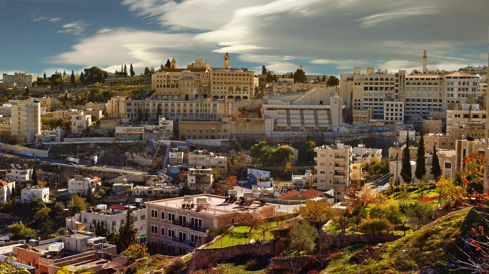
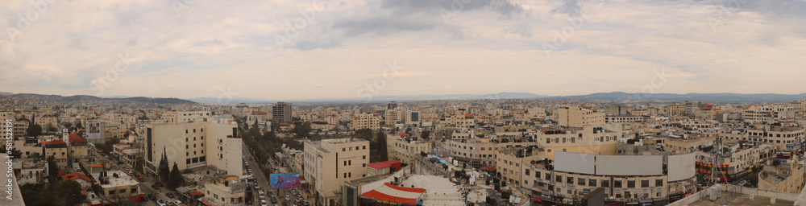

Jerusalem
Jerusalem is an ancient city in West Asia, on a plateau in the Judaean Mountains between the Mediterranean and the Dead Sea. It is one of the oldest cities in the world, and is considered holy to the three major Abrahamic religions—Judaism, Christianity, and Isla

Bethlehem
Bethlehem is a Palestinian town south of Jerusalem in the West Bank. The biblical birthplace of Jesus, it’s a major Christian pilgrimage destination.

Jericho
Jericho is a city in the West Bank; it is the administrative seat of the Jericho Governorate of the State of Palestine. Jericho is located in the Jordan Valley, with the Jordan River to the east and Jerusalem to the west. In 2017, it had a population of 20,907

Beit Jala
Beit Jala is a Palestinian Christian town in the Bethlehem Governorate of Palestine, in the West Bank. Beit Jala is located 10 km 10 km south of Jerusalem, on the western side of the Hebron road, opposite Bethlehem, at 825 meters altitude

Beit Sahour
Beit Sahour or Beit Sahur is a Palestinian town east of Bethlehem, in the Bethlehem Governorate of the State of Palestine. The city is under the administration of the Palestinian National Authority. The population was of 13,281 in 2017, consisting of approximately 80% Christians and 20% Muslim

Hebron
Hebron is a Palestinian city in the southern West Bank, 30 kilometres south of Jerusalem. Nestled in the Judaean Mountains, it lies 930 metres above sea level

Ramallah and al-Bireh
Ramallah is a Palestinian city in the central West Bank or Ramallah Bank, that serves as the de facto administrative capital of the State of Palestine. It is situated on the Judaean Mountains, 10 km north of Jerusalem, at an average elevation of 872 meters above sea level, adjacent to al-Bireh

Nablus
Nablus is a Palestinian city in the West Bank, located approximately 49 kilometres north of Jerusalem, with a population of 156,906

Tulkarem
Tulkarm or Tulkarem is a Palestinian city in the West Bank, the capital of the Tulkarm Governorate of the State of Palestine. The Israeli city of Netanya is to the west, and the Palestinian cities of Nablus and Jenin to the east

Jenin
Jenin is a city in the State of Palestine, in the Israeli-occupied West Bank. The city serves as the administrative center of the Jenin Governorate of Palestine and is a major center for the surrounding towns
.jpg)
Rafah
Rafah is a Palestinian city in the southern Gaza Strip; it is the capital of the Rafah Governorate of the State of Palestine, located 30 kilometers south-west of Gaza City. In 2017, Rafah had a population of 171,889.

Khan Yunis
Khan Yunis is a city in the southern Gaza Strip; it is the capital of the Khan Yunis Governorate in the Gaza Strip. According to the Palestinian Central Bureau of Statistics, Khan Yunis had a population of 205,125 in 2017